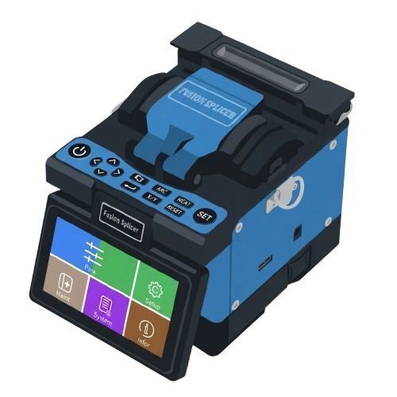
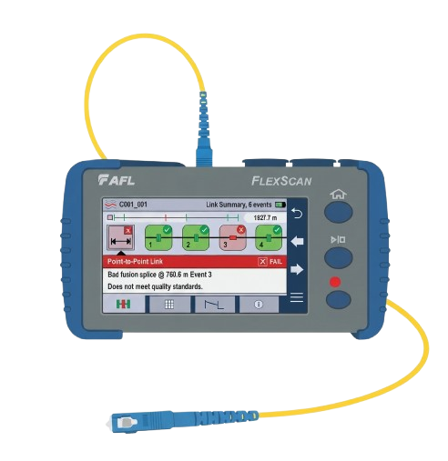
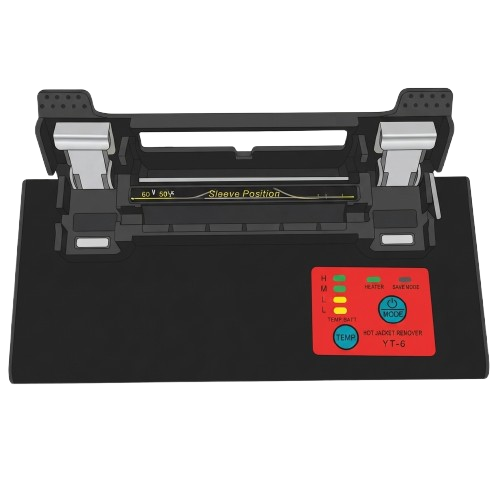
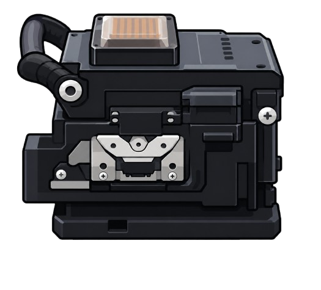
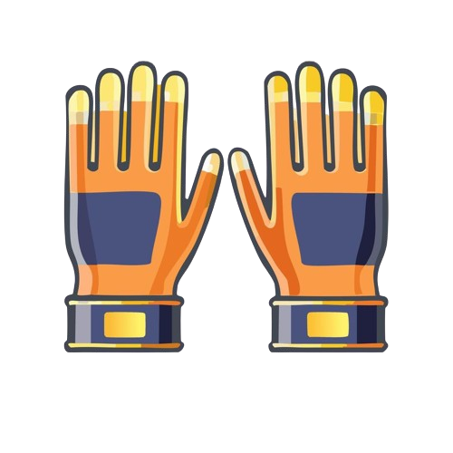
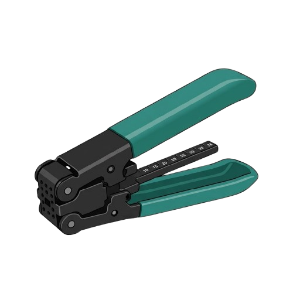
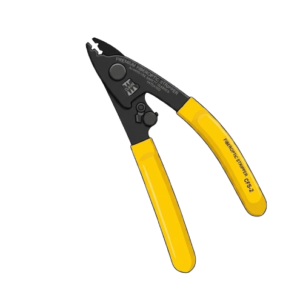
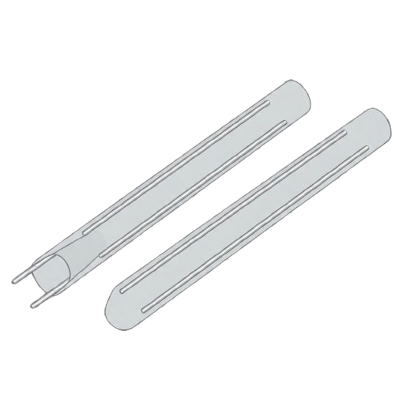

Praktik fusion splicing, langsung di browser.
Pakai sarung tangan, kupas, bersihkan, potong, sambung, panaskan, lalu ukur redamannya. Sembilan langkah seperti di laboratorium, tidak ada serat dan sleeve yang terbuang.
Sembilan alat, semuanya bisa diseret
Posisi alat di rak diacak setiap sesi. Kamu harus tahu alat mana untuk langkah mana. Angka kuning menunjukkan langkah pemakaiannya.








Sembilan langkah, urutannya tetap
Salah memilih alat dicatat sebagai kesalahan dan mengurangi nilaimu. Batas sambungan yang lulus adalah redaman 0,30 dB.
- 1
Pakai sarung tangan
Melindungi tangan dari serpihan kaca dan menjaga serat tetap bersih.
- 2
Kupas jaket luar kabel
Seret pengupas ke ujung kabel kiri dan kanan. Jaket terkupas 3 cm.
- 3
Bersihkan serat dengan alkohol
Gosok tisu pada serat sampai gel dan kotoran hilang.
- 4
Kupas coating serat
Miller membuka cladding kaca sepanjang 15 mm.
- 5
Potong dengan fiber cleaver
Seret kedua kabel ke cleaver agar ujung serat rata, sudut potong mendekati 0°.
- 6
Pasang sleeve pelindung
Harus dipasang sebelum serat disambung.
- 7
Jalankan fusion splicer
Masukkan serat, tutup penutup, lalu mesin menyejajarkan inti dan melebur dengan busur listrik.
- 8
Geser sleeve, lalu panaskan
Seret sleeve tepat ke titik sambungan, lalu heater menyusutkannya.
- 9
Ukur redaman sambungan
OTDR mengirim pulsa dari kedua arah, lalu menampilkan redaman dalam dB.
Dua mode, satu nilai
Pilih mode saat mulai. Nilai dihitung otomatis dan bisa diunduh sebagai bukti.
Mode belajar
Langkah, petunjuk, dan catatan terus tampil di layar. Cocok untuk latihan pertama.
Mode ujian
Petunjuk disembunyikan. Yang tersisa hanya area kerja, timer, dan nilai. Cocok untuk penilaian.
A 90 ke atasB 80 ke atasC 70 ke atasD di bawah 70
- Nama
- Nama siswa
- No. absen
- 7
- Waktu
- 04:03
Contoh hasil. ID bukti unik dibuat di setiap unduhan JPG.